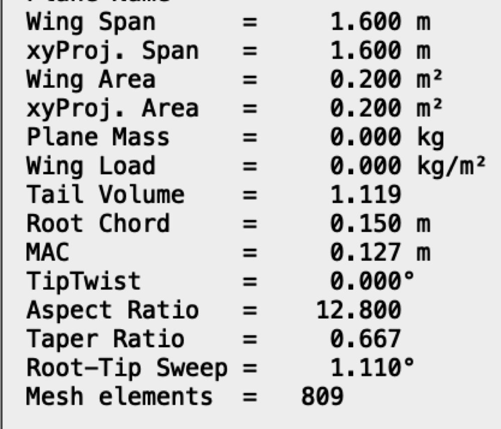
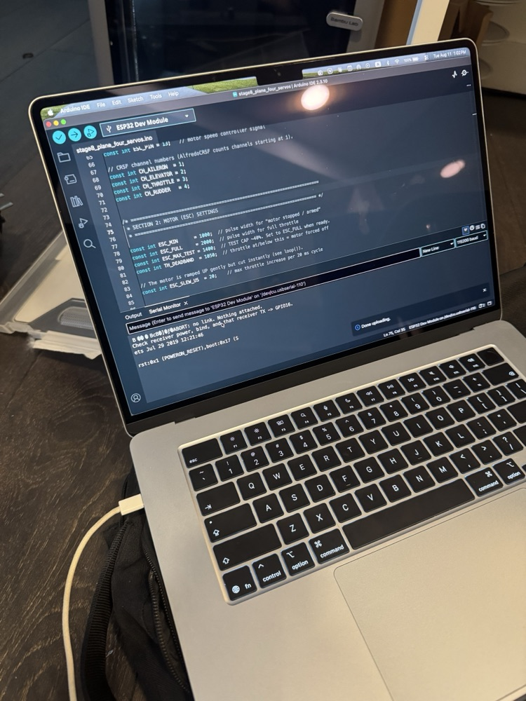
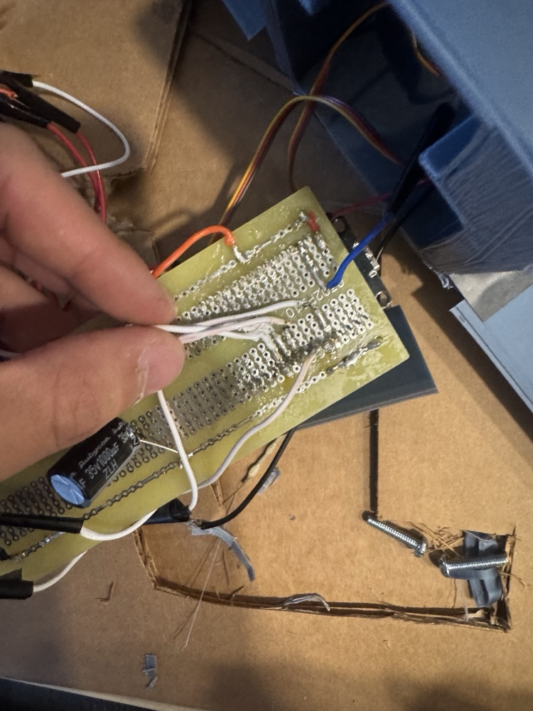
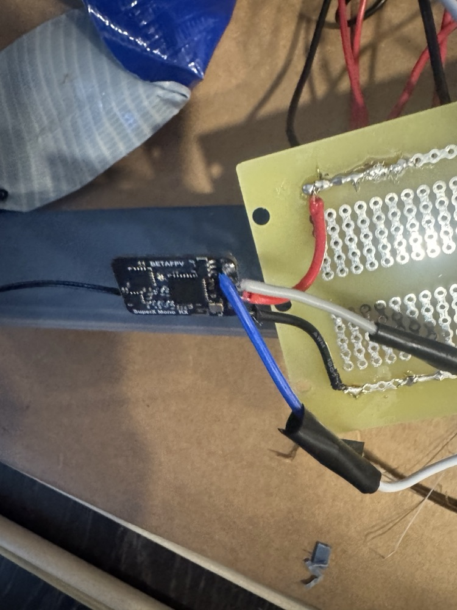
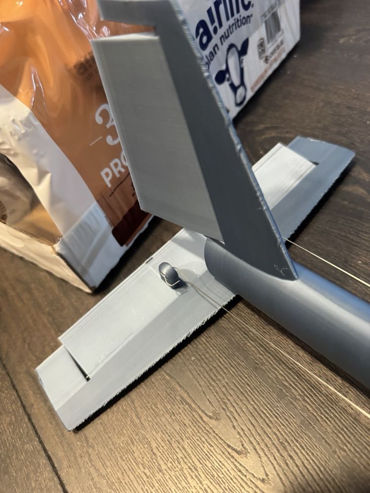
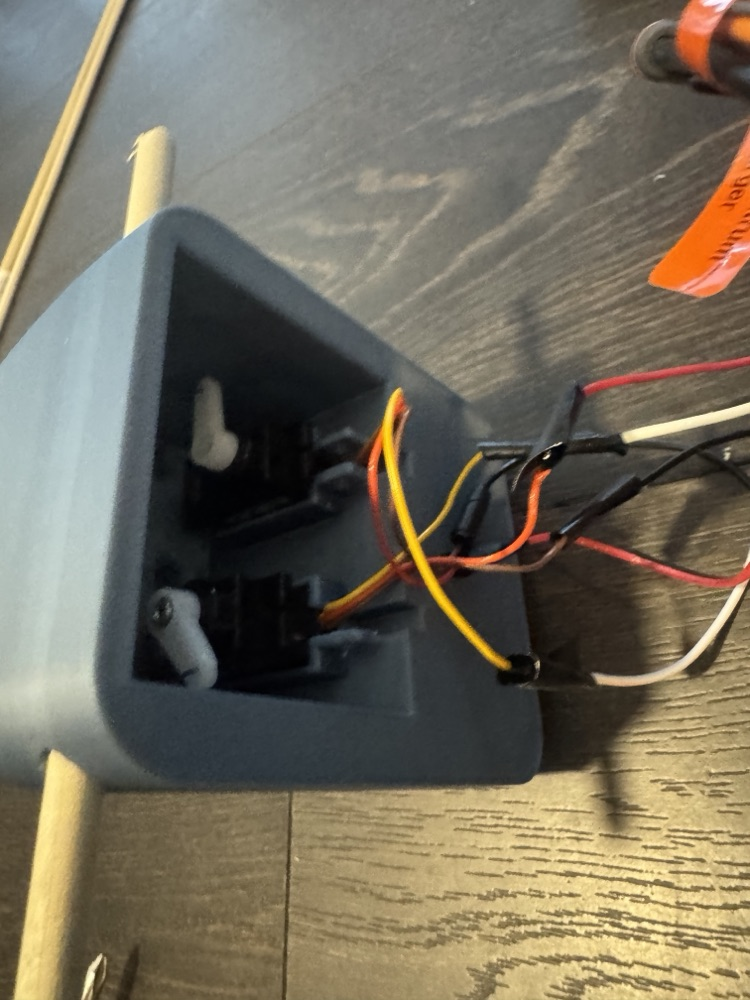
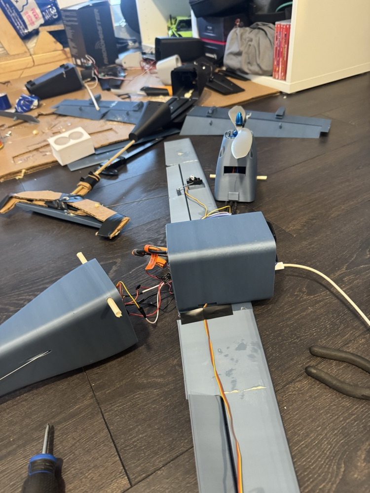

“Stage 8”, as my Arduino file name suggests, is the 8th rebuild of a plane that has not flew yet. Delays mostly include 3d printing tolerance testing, weight : strength, and dimensional testing for physical parts like batteries, screws, and servos. Tx and Rx of the receiver are wire to GPIO 16 and 17 of the ESP respectively. Servos are on 4, 18, 19, and 21. The nice thing about using your own code over a pre-built flight controller is knowing where all the inner function are. Diagnosis becomes a lot easier for servo function and fail safes.
The plane itself has:
- SunnySky V3 x2820 860KV
- 12×6 inch prop
- 4s 14.8v lipo
- 50A 5vSBEC ESC
- ELRS reciever and some servos
Some cool things I initially learned about:
- Failsafes: returning to a safe state rather than crashing or holding a last known value
- States: Moving from idle, armed, running, and fault
- Using arrays and lists to hold data over randomly dispersed variables
- millis() scheduling: Just counts time from on to determine delay rather than using delay() which pauses the whole program (must used unsigned long as type)
- What is actually happening to the serial and peripherals I definitely need more time toying with. I understand how the buffering and parsing works but all the syntax is still being understood.
- Plane aerodynamic balance and behaviors: This plane uses NACA4412 as the main airfoils with 2 degrees of dihedral and NACA0110’s for the elevator and rudder. The COG is 3 cm in front of the simulated COL, but will probably need to be adjusted after test. There are a lot more ratios to list, but they weren’t chosen very intentionally so these values will be left for another plane’s analysis.






